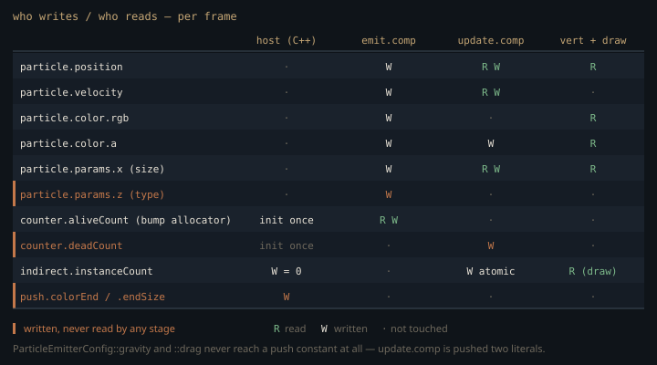

Monograph · Tree · ← Sitemap · Particle system
graph
Particle system
CPU/GPU particle orchestration.
One pool, two dispatches, one indirect draw
Sparks and smoke are the one class of geometry the CPU must not touch per-item: the count changes every frame and they die faster than a readback round-trip. OHAO answers with a fixed device-local pool — 65,536 records of four `vec4`s, 4 MiB, allocated once and never resized. Position carries current age in `.w`, velocity carries total lifetime in `.w`, then RGBA colour, then a params vector of size, rotation, type and an alive flag.
VkDeviceSize particleSize = sizeof(GPUParticle) * m_maxParticles;ohao/render/particles/particle_system.cpp:102Two four-word buffers ride alongside — a counter block and a `VkDrawIndirectCommand` — both host-visible and coherent, so the CPU seeds them without a staging copy. A frame records one `emit` dispatch per queued emitter (64 threads per group, one per requested particle), a compute→compute barrier, then one `update` dispatch that sweeps the *entire* pool regardless of how many particles are alive:
uint32_t groupCount = (m_maxParticles + 255) / 256;ohao/render/particles/particle_system.cpp:504The alternative is the textbook alive-list/dead-list pair driven by `vkCmdDispatchIndirect`, where the update dispatch is sized from a GPU-resident count. That costs a compaction pass, an extra barrier, and makes the dispatch depend on device memory. OHAO pays a flat 65,536-lane sweep of mostly-early-out threads instead. A device-resident count does not disappear — `update` still builds `instanceCount` atomically and the draw reads it back through a `DRAW_INDIRECT` barrier — but only the *draw* waits on it, never a dispatch, so there is no compaction pass. The trade stops being right an order of magnitude up.
The allocator that only counts up
Emission allocates by bump. Each thread atomically increments `aliveCount` and treats the old value as its slot; the shader's comment says "find a dead particle slot" but there is no free list to search.
uint slot = atomicAdd(aliveCount, 1);shaders/particles/particle_emit.comp:58An out-of-range thread gives its slot back by adding `-1u` and returns; nothing else ever lowers the counter. `update` marks expired particles dead and increments `deadCount`, which no shader and no C++ line reads. The counter block is written exactly once, at buffer creation — the only per-frame reset is the indirect command.
`aliveCount` is therefore not a population but a monotone high-water mark of every particle ever emitted, and dead slots are never reclaimed. After 65,536 cumulative emissions — 512 explosions at 128 each — the bounds check fails for every emit thread and the system stops spawning for the life of the process. That is a data-structure gap, not a tuning one: recycling needs a free list or a compaction pass, and the three-buffer layout has nowhere to put one.
Uniform in angle is not uniform in solid angle
Emission direction is a cone sample around the configured axis. The shader draws uniform variates $\xi_1,\xi_2$, uses the first for an azimuth, and feeds the second *directly* to the polar angle:
float phi = r2 * spread;shaders/particles/particle_emit.comp:76then tilts the axis by that angle against an orthonormal in-plane pair:
vec3 randomDir = dir * cos(phi) + (right * cos(theta) + up * sin(theta)) * sin(phi);shaders/particles/particle_emit.comp:84with $\theta = 2\pi\xi_1$, $\phi = \xi_2\phi_{\max}$, and $\phi_{\max}$ = `ParticleEmitterConfig::spreadAngle` in radians. The rotation is exact: $\mathbf{d}\cos\phi + (\mathbf{r}\cos\theta + \mathbf{u}\sin\theta)\sin\phi$ tilts $\phi$ off the axis $\mathbf{d}$. The density is not. A solid-angle element is $d\omega = \sin\phi\,d\phi\,d\theta$, so uniform $\phi$ gives a directional density
which diverges as $\phi \to 0$ and again as $\phi \to \pi$. Uniform coverage of the cone instead requires inverting the cosine,
For a narrow cone the bias is invisible — muzzle flash's $\phi_{\max} = 0.3$ rad just gets a hot core. The preset that suffers asks for a full sphere:
config.spreadAngle = 3.14159f; // full sphereohao/render/particles/particle_system.cpp:588At $\phi_{\max} = \pi$ the $1/\sin\phi$ weighting piles particles onto both poles of the $+Y$ emission axis and starves the equator, so a "spherical" burst reads as a vertical dumbbell. The fix is the one line above.
What the presets ask for, and what the GPU does
The preset table is authored with real intent: muzzle flash gets zero gravity and drag 5.0 so it stops dead in the air, smoke gets gravity −0.5 for buoyancy, water splash −6.0 under the comment "arcs up then falls". None of it reaches a shader. `update()` pushes two literals:
pc.gravity = 9.81f;ohao/render/particles/particle_system.cpp:495One of those presets would also miss its comment even if the value did arrive. The integrator *subtracts* the pushed gravity from `velocity.y`, so a negative `gravity` is a constant upward acceleration held for the particle's whole life:
p.velocity.y -= update.gravity * update.deltaTime;shaders/particles/particle_update.comp:64Smoke's −0.5 reads as the intended buoyancy. Water splash's −6.0 against drag 0.5 accelerates droplets upward for their entire lifetime, toward a positive terminal velocity — the inverse of the arc its comment describes, not a tuning error.
config.gravity = -6.0f; // arcs up then fallsohao/render/particles/particle_system.cpp:637Every particle therefore falls at 9.81 with drag 0.1 — a structural consequence of the single global update dispatch, where one push-constant block covers all 65,536 particles and per-emitter forces have nowhere to live. The particle *type* is stored in `params.z` precisely so the update shader could branch on it, and the update shader never reads it. `colorEnd` and `endSize` share that fate: packed into the emit push constants, read by nothing, so the colour ramp is a hardcoded alpha fade and the size ramp a hardcoded shrink.

That shrink has a defect of its own. It names its local `startSize` but reads the *current* size back out of `params.x` and rescales it in place:
p.params.x = startSize * (1.0 - lifeRatio * 0.5);shaders/particles/particle_update.comp:77so the reduction compounds geometrically across frames instead of interpolating from the emitted size, and the result is frame-rate dependent — the same particle simulated at 120 fps ends up dramatically smaller than at 60 fps.
Every emit queued in a frame is also handed the same `m_totalTime`, and the emit shader seeds its hash from `(time, index)` alone.
m_particleSystem->emit(cmd, m_pendingEmits.front(), m_totalTime);ohao/render/deferred/deferred_renderer.cpp:575Two effects spawned on one frame with equal particle counts therefore get identical random directions, speeds and lifetimes.
The instance count arrives, the instance index does not
`update` finishes by counting survivors straight into the draw command, one atomic per alive lane:
atomicAdd(instanceCount, 1);shaders/particles/particle_update.comp:82and the CPU pre-seeds that same struct each frame with a fixed six-vertex quad and a zero instance count:
indirect[0] = 6; // vertexCount (6 vertices per billboard quad)ohao/render/particles/particle_system.cpp:481No vertex buffer is bound at all — the corners are a `const vec2[6]` in the vertex shader, expanded into a world-space quad by the two camera basis vectors pushed as constants. So the GPU is told: six vertices, N instances. The vertex shader then derives its particle from the *vertex* index:
uint particleIndex = gl_VertexIndex / 6;shaders/particles/particle_render.vert:39Under that draw `gl_VertexIndex` never leaves `[0, 6)`, so `particleIndex` is zero for every instance, and `gl_InstanceIndex` does not appear anywhere in `shaders/particles/`. The shader is written for the non-instanced form — a draw of 6·N vertices, where the divide-and-modulo split and the dead-particle early-out (which clips its quad to a degenerate point) both make sense — while the C++ issues the instanced form. The alive count is computed correctly and then never used to select a particle.
Additive, depth-tested, never depth-written
All seven particle types share one blend state: source alpha in, destination `ONE`.
blendAttachment.dstColorBlendFactor = VK_BLEND_FACTOR_ONE; // Additiveohao/render/particles/particle_system.cpp:360Depth is tested against the GBuffer so particles are occluded by solid geometry, but never written, so they never occlude each other.
depthStencil.depthWriteEnable = VK_FALSE; // Particles don't write depthohao/render/particles/particle_system.cpp:353Additive compositing is commutative in RGB, so the colour is identical for any draw order and the engine never sorts billboards. The alpha channel is not: `srcAlphaBlendFactor` is `ONE` against `dstAlphaBlendFactor` `ZERO`, which replaces destination alpha with whichever fragment landed last. {{cite ohao/render/particles/particle_system.cpp "blendAttachment.dstAlphaBlendFactor = VK_BLEND_FACTOR_ZERO;"}} The rejected alternative — a per-frame depth sort of the pool, or an order-independent transparency scheme — means a GPU sort or extra targets for a subsystem that mostly draws sparks. The price is that nothing can darken: the SMOKE preset's grey *adds* grey light to the HDR buffer rather than occluding what is behind it, so a smoke plume brightens the scene. Real smoke needs a second pipeline with `SRC_ALPHA`/`ONE_MINUS_SRC_ALPHA` and a sort.
The pass draws into an image nobody reads
Particles are stage 4.7, after lighting, SSS, SSR and sky, before post-processing. Their framebuffer's colour attachment is the lighting pass's output view:
VkImageView hdrView = m_lightingPass->getOutputView();ohao/render/deferred/deferred_renderer.cpp:1029That is not the view post-processing samples. The one call to `setHDRInputWithImage` prefers the SSS pass's own output whenever an SSS pass exists, falling back to the lighting view only when it does not:
m_sssPass->getOutputView() : m_lightingPass->getOutputView();ohao/render/deferred/deferred_renderer.cpp:621And it always exists. `SSSPass` is constructed unconditionally and reset only if `initialize()` fails, and a successful `initialize()` has already allocated its own 1920×1080 output image, so `getOutputView()` is never null. The SSS blur runs at stage 4.5 — two stages *before* the particle pass — reading the lighting image and writing its result into its own allocation. Everything downstream, bloom and tonemapping included, works from that earlier snapshot. So the billboards land in an image nothing downstream reads. This is the second, larger reason nothing appears on screen — the first being the vertex indexing above.
The render pass itself loads both attachments rather than clearing them, and declares the colour attachment's initial *and* final layouts as `SHADER_READ_ONLY_OPTIMAL` rather than `COLOR_ATTACHMENT_OPTIMAL`, matching what the lighting pass left behind.
colorAttachment.loadOp = VK_ATTACHMENT_LOAD_OP_LOAD;ohao/render/deferred/deferred_renderer.cpp:972The depth attachment does not get the same care. It declares `DEPTH_STENCIL_ATTACHMENT_OPTIMAL` at both ends:
depthAttachment.initialLayout = VK_IMAGE_LAYOUT_DEPTH_STENCIL_ATTACHMENT_OPTIMAL;ohao/render/deferred/deferred_renderer.cpp:987while the GBuffer pass leaves depth in `DEPTH_STENCIL_READ_ONLY_OPTIMAL`, which is also what the render graph declares for it.
attachments[4].finalLayout = VK_IMAGE_LAYOUT_DEPTH_STENCIL_READ_ONLY_OPTIMAL;ohao/render/deferred/gbuffer_pass.cpp:520The framebuffer holds the lighting output view and the GBuffer depth view directly, so it is rebuilt on every resize. Failure is handled unevenly. Only a failed `ParticleSystem::initialize` nulls the system; a failed render pass, framebuffer or render pipeline logs and leaves it alive.
std::cerr << "DeferredRenderer: Particle render pass/framebuffer failed (non-fatal)" << std::endl;ohao/render/deferred/deferred_renderer.cpp:118In that state `emit` and `update` keep dispatching every frame — burning the compute and the monotone `aliveCount` budget — while `render()` early-outs on the null pipeline. Nothing is ever drawn, and nothing says so after the one startup line.
The pool is a bump allocator that never recycles, and the render path counts survivors correctly but indexes only particle zero. Until the index is wired to `gl_InstanceIndex` (or the draw de-instanced) the system draws one billboard N times; until slots are reclaimed it is a one-shot 65,536-particle budget for the process.
Contracts
- `update()` must be recorded after every `emit()` in the same frame: it is the only writer of `instanceCount` and it zeroes the indirect command from the host at record time, so a later emit contributes nothing to that frame's draw.
- The indirect buffer is a single host-visible allocation rewritten through `vkMapMemory` during command recording, not by a GPU transfer — and the deferred path already runs three frames in flight, waiting only on frame *N*−3 before it records. Nothing synchronizes that host write against the two earlier submissions, which may still be reading the same buffer for their `vkCmdDrawIndirect`. The hazard is live today, not one that adding frames-in-flight would introduce; fixing it needs per-frame indirect buffers.
- The framebuffer aliases `DeferredLightingPass::getOutputView()` and `GBufferPass::getDepthView()`; recreating either pass invalidates it, and the resize path must rebuild it or the render pass binds a destroyed view.
- `emit` push constants total 112 bytes and `render` 96 — both inside the 128-byte floor Vulkan guarantees for `maxPushConstantsSize`. The emit block has exactly one `vec4` of headroom on a minimum-spec device; a second crosses it.
Source files
ohao/render/particles/particle_system.cppshaders/particles/particle_emit.compshaders/particles/particle_update.compohao/render/deferred/deferred_renderer.cppshaders/particles/particle_render.vertohao/render/deferred/gbuffer_pass.cppohao/render/particles/particle_system.hppParent hub for the full pipeline narrative; this page is the file-level design unit. Sitemap · hover glossary terms anywhere.